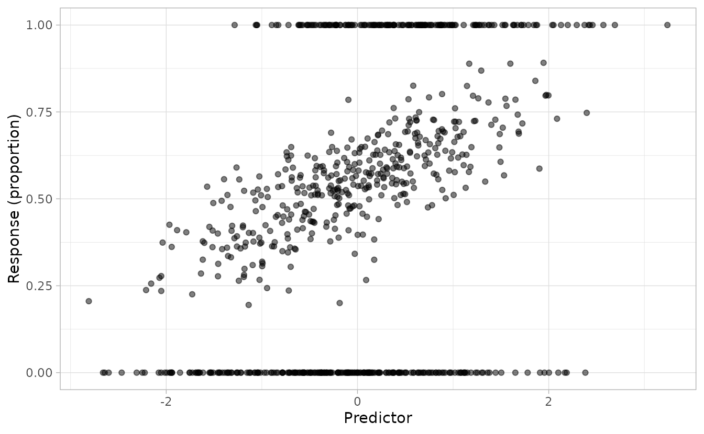
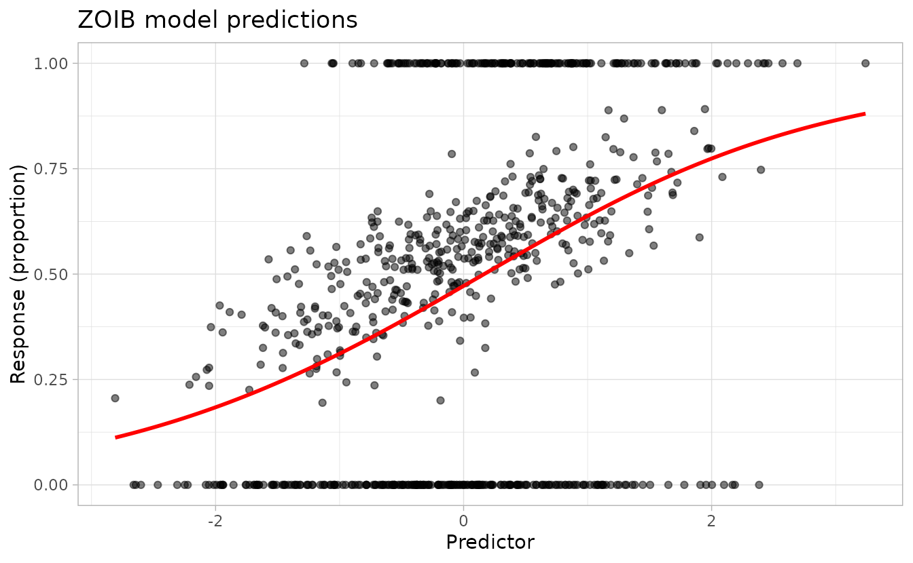
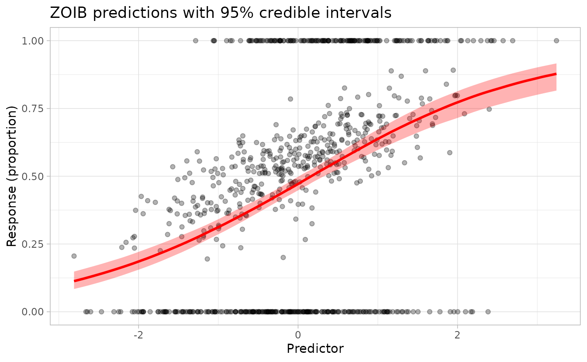
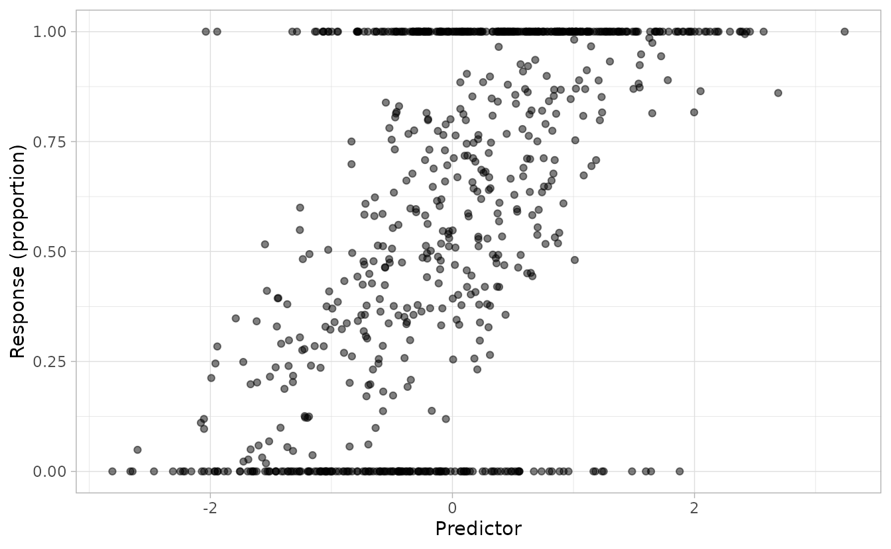
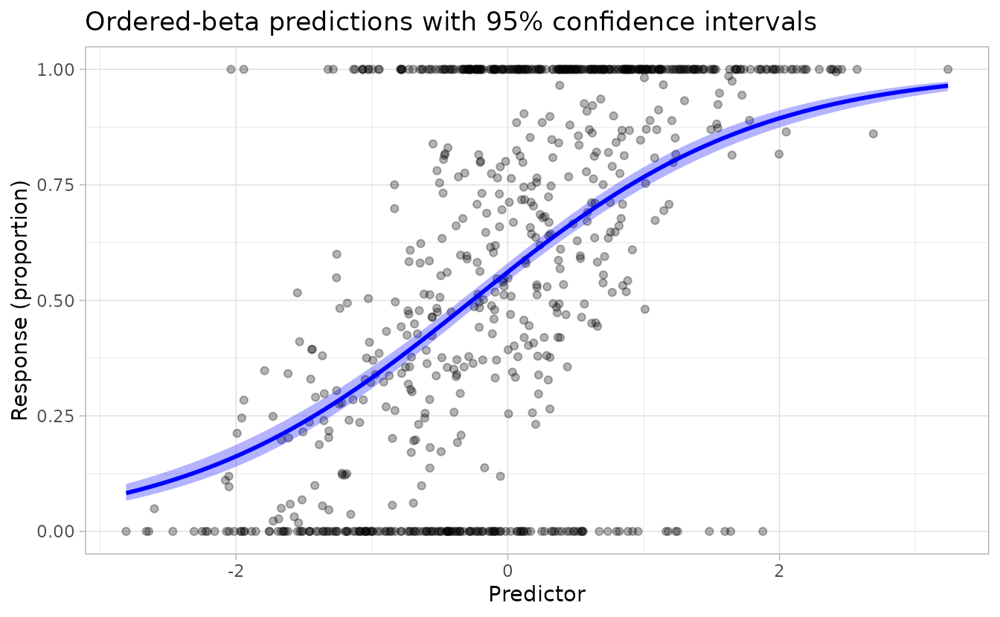

Models for bounded proportional data in sdmTMB: ZOIB and ordered beta
Sean C. Anderson
2026-09-26
Source:vignettes/articles/zoib.Rmd
zoib.RmdIf the code in this vignette has not been evaluated, a rendered version is available on the documentation site under ‘Articles’.
Introduction
Proportional data bounded between 0 and 1—such as habitat suitability indices, cover fractions, or proportional abundances—often include more zeros and/or ones than a standard beta distribution would predict. Two complementary approaches are available in sdmTMB for such data:
Three-model ZOIB: fit three separate models (a zero component, a one component, and a continuous beta component) and combine their predictions. This approach allows different predictors and even different spatial structures for each component, at the cost of more parameters and manual combination of predictions.
Ordered-beta (
ordbeta()family): a single model with one linear predictor shared across all three outcomes, plus two estimated cutpoints that govern boundary inflation. This is more parsimonious when the same covariates drive the probability of zeros, ones, and the continuous proportion.
This vignette demonstrates both approaches on simulated data.
The three-model ZOIB approach
Simulating ZOIB data
Let’s simulate data from a ZOIB process to illustrate how to fit these models in sdmTMB.
First, we’ll set up the parameters for our simulation:
set.seed(123)
N <- 800
x <- rnorm(N)
# Coefficients for the zero component (logit scale)
b_0 <- c(-1, -0.4)
# Coefficients for the one component (logit scale)
b_1 <- c(-1, 0.6)
# Coefficients for the proportion component (logit scale for mean)
b_prop <- c(0.2, 0.5)
# Precision parameter for beta distribution
phi <- 30Now we’ll simulate the three components:
# Zero component: probability of observing a zero
p <- plogis(cbind(rep(1, N), x) %*% b_0)
y_p <- rbinom(N, 1, p)
# One component: probability of observing a one (given not zero)
q <- plogis(cbind(rep(1, N), x) %*% b_1)
y_q <- rbinom(N, 1, q)
# Proportion component: beta-distributed values between 0 and 1
mu <- plogis(cbind(rep(1, N), x) %*% b_prop)
a <- phi * mu
b <- phi * (1 - mu)
y_r <- rbeta(N, a, b)Finally, we combine the components to create the ZOIB response:
y <- numeric(length = N)
y[y_p == 1] <- 0
y[y_p != 1 & y_q == 1] <- 1
y[y_p != 1 & y_q != 1] <- y_r[y_p != 1 & y_q != 1]
dat <- data.frame(x, y)
ggplot(dat, aes(x, y)) +
geom_point(alpha = 0.5) +
labs(x = "Predictor", y = "Response (proportion)")
The plot shows the characteristic ZOIB pattern: data concentrated at 0 and 1, with continuous values between.
Fitting the ZOIB model components
To fit a ZOIB model with sdmTMB, we fit three separate models and combine their predictions.
First, we prepare the data for each component:
# Zero component: 1 if zero, 0 otherwise
dat$y_zero <- ifelse(dat$y == 0, 1, 0)
# One component: 1 if one, 0 if between 0 and 1, NA if zero
dat$y_one <- ifelse(dat$y == 1, 1, ifelse(dat$y < 1 & dat$y != 0, 0, NA))
# Proportion component: the value itself, but only for values between 0 and 1
dat$y_proportion <- ifelse(dat$y < 1 & dat$y > 0, dat$y, NA)Now we fit the three models. In this example, we turn off spatial
effects with spatial = "off", but in practice you could
include spatial and spatiotemporal random fields in any or all of the
components:
# Model 1: Zero component
fit_zero <- sdmTMB(
y_zero ~ x,
data = dat,
family = binomial(link = "logit"),
spatial = "off"
)
# Model 2: One component (excluding zeros)
fit_one <- sdmTMB(
y_one ~ x,
data = subset(dat, !is.na(y_one)),
family = binomial(link = "logit"),
spatial = "off"
)
# Model 3: Proportion component (values between 0 and 1)
fit_proportion <- sdmTMB(
y_proportion ~ x,
data = subset(dat, !is.na(y_proportion)),
family = Beta(link = "logit"),
spatial = "off"
)Let’s check how well we recovered the simulation parameters:
# Zero component coefficients
coef(fit_zero)
#> (Intercept) x
#> -0.8702097 -0.4254690
b_0
#> [1] -1.0 -0.4
# One component coefficients
coef(fit_one)
#> (Intercept) x
#> -1.0390158 0.7738772
b_1
#> [1] -1.0 0.6
# Proportion component coefficients
coef(fit_proportion)
#> (Intercept) x
#> 0.2114247 0.4901013
b_prop
#> [1] 0.2 0.5
# Precision parameter
tidy(fit_proportion, "ran_pars")
#> # A tibble: 1 × 5
#> term estimate std.error conf.low conf.high
#> <chr> <dbl> <dbl> <dbl> <dbl>
#> 1 phi 29.6 2.09 25.8 34.0
phi
#> [1] 30The estimated coefficients should be close to the true values used in the simulation.
Making predictions
To make predictions from a ZOIB model, we need to:
- Generate predictions from each component
- Combine them using the ZOIB formula
First, create a new data frame for prediction:
nd <- data.frame(x = seq(min(x), max(x), length.out = 100))Point predictions
Generate point predictions from each component and combine:
# Get predictions on the response scale (probabilities/proportions)
p0 <- plogis(predict(fit_zero, newdata = nd)$est)
p1 <- plogis(predict(fit_one, newdata = nd)$est)
pp <- plogis(predict(fit_proportion, newdata = nd)$est)
# Combine using ZOIB formula: E[Y] = (1 - p0) * (p1 + (1 - p1) * pp)
nd$est <- (1 - p0) * (p1 + (1 - p1) * pp)Plot the predictions:
ggplot(dat, aes(x, y)) +
geom_point(alpha = 0.5) +
geom_line(aes(x, est), data = nd, colour = "red", linewidth = 1) +
labs(
x = "Predictor", y = "Response (proportion)",
title = "ZOIB model predictions"
)
Predictions with uncertainty
To incorporate parameter uncertainty, we use can use simulation-based
inference. The predict() function with nsim
will draw from the joint precision matrix of the fixed effects and
random effects:
# Generate simulation draws from each model
p0 <- plogis(predict(fit_zero, newdata = nd, nsim = 500))
p1 <- plogis(predict(fit_one, newdata = nd, nsim = 500))
pp <- plogis(predict(fit_proportion, newdata = nd, nsim = 500))
# Combine the simulations
combined <- (1 - p0) * (p1 + (1 - p1) * pp)
# Calculate median and credible intervals
nd$est2 <- apply(combined, 1, median)
nd$lwr <- apply(combined, 1, quantile, probs = 0.025)
nd$upr <- apply(combined, 1, quantile, probs = 0.975)Plot with uncertainty bands:
ggplot() +
geom_point(data = dat, aes(x = x, y = y), alpha = 0.3) +
geom_ribbon(
data = nd, aes(x = x, ymin = lwr, ymax = upr),
fill = "red", alpha = 0.3
) +
geom_line(
data = nd, aes(x = x, y = est2),
colour = "red", linewidth = 1
) +
labs(
x = "Predictor", y = "Response (proportion)",
title = "ZOIB predictions with 95% credible intervals"
)
The red line shows the median prediction and the shaded region shows the 95% credible interval accounting for parameter uncertainty.
Comparison with the zoib package
For reference, we can compare our approach to the dedicated ZOIB
implementation in the zoib package, which uses Bayesian
methods:
library(zoib)
m <- zoib(y ~ x | 1 | x | x,
data = dat,
zero.inflation = TRUE,
one.inflation = TRUE,
joint = FALSE,
n.iter = 600,
n.thin = 1,
n.burn = 100
)
# Extract parameter estimates
sample1 <- m$coeff
summary(sample1, quantiles = 0.5)
# Compare with our estimates
coef(fit_proportion)
coef(fit_zero)
coef(fit_one)
# Generate predictions
pred <- pred.zoib(m, xnew = nd)
nd2 <- data.frame(x = nd$x, zoib = pred$summary[, "mean"])
# Compare predictions
ggplot(dat, aes(x, y)) +
geom_point(alpha = 0.3) +
geom_line(aes(x, est), data = nd, colour = "red", linewidth = 1) +
geom_line(aes(x, zoib), data = nd2, colour = "blue", linewidth = 1, linetype = 2) +
labs(
x = "Predictor", y = "Response (proportion)",
title = "Comparison: sdmTMB (red) vs zoib package (blue)"
)The ordered-beta approach
The ordered-beta regression model (Kubinec
2023) is a single-model alternative that is built directly into
sdmTMB as the ordbeta() family. It uses one linear
predictor shared across all three outcome types (zero, continuous, one),
plus two estimated cutpoint parameters (ψ₀ and ψ₁) that govern how much
probability mass falls at the boundaries. A precision parameter φ
controls the spread of the continuous beta component, just as in a
standard beta regression.
Because covariate effects are shared across the three outcomes, the model is more parsimonious than the three-model ZOIB approach. It is a natural first choice when you have no strong reason to believe the processes driving zeros vs. ones vs. the continuous proportion differ in their relationship to the predictors.
Simulating ordered-beta data
We reuse the same predictor x from the ZOIB simulation
above so the data sets are directly comparable. The true parameters are
a single intercept and slope for the mean (logit scale), plus φ and two
cutpoints:
set.seed(42)
eta_ord <- 0.3 + 0.8 * x
mu_ord <- plogis(eta_ord)
phi_ord <- 6
psi <- c(-1.2, 1.0)
p0_ord <- plogis(psi[1] - eta_ord) # Pr(y == 0)
p1_ord <- plogis(eta_ord - psi[2]) # Pr(y == 1)
u_ord <- runif(N)
y_ord <- numeric(N)
zero_ <- u_ord < p0_ord
one_ <- u_ord > 1 - p1_ord
mid_ <- !zero_ & !one_
y_ord[zero_] <- 0
y_ord[one_] <- 1
y_ord[mid_] <- rbeta(
sum(mid_), mu_ord[mid_] * phi_ord,
(1 - mu_ord[mid_]) * phi_ord
)
dat_ord <- data.frame(x = x, y = y_ord)
ggplot(dat_ord, aes(x, y)) +
geom_point(alpha = 0.5) +
labs(x = "Predictor", y = "Response (proportion)")
Fitting the ordered-beta model
A single sdmTMB() call with
family = ordbeta() replaces the three separate models:
Checking parameter recovery
# Fixed effects: intercept ≈ 0.3, x slope ≈ 0.8
tidy(fit_ord)
#> # A tibble: 2 × 5
#> term estimate std.error conf.low conf.high
#> <chr> <dbl> <dbl> <dbl> <dbl>
#> 1 (Intercept) 0.247 0.0401 0.168 0.325
#> 2 x 0.943 0.0428 0.860 1.03
# Precision and boundary cutpoints (on [0, 1] scale)
tidy(fit_ord, "ran_pars")
#> # A tibble: 3 × 5
#> term estimate std.error conf.low conf.high
#> <chr> <dbl> <dbl> <dbl> <dbl>
#> 1 phi 6.99 0.499 6.08 8.04
#> 2 ordbeta_cutpoint_lower 0.217 NA NA NA
#> 3 ordbeta_cutpoint_upper 0.724 NA NA NAPredictions with uncertainty
For a fixed-effects model, se_fit = TRUE provides
delta-method standard errors on the linear predictor. Transforming
through plogis() gives approximate confidence intervals on
the beta-distribution mean µ:
nd_ord <- data.frame(x = seq(min(x), max(x), length.out = 100))
p_ord <- predict(fit_ord, newdata = nd_ord, se_fit = TRUE, re_form = NA)
nd_ord$est <- plogis(p_ord$est)
nd_ord$lwr <- plogis(p_ord$est - 1.96 * p_ord$est_se)
nd_ord$upr <- plogis(p_ord$est + 1.96 * p_ord$est_se)
ggplot() +
geom_point(data = dat_ord, aes(x = x, y = y), alpha = 0.3) +
geom_ribbon(
data = nd_ord, aes(x = x, ymin = lwr, ymax = upr),
fill = "blue", alpha = 0.3
) +
geom_line(
data = nd_ord, aes(x = x, y = est),
colour = "blue", linewidth = 1
) +
labs(
x = "Predictor", y = "Response (proportion)",
title = "Ordered-beta predictions with 95% confidence intervals"
)
The curve shows µ (the mean of the continuous beta component) with delta-method confidence intervals. The full expected value E[Y] also accounts for boundary probability mass, but µ is the main quantity of interest for a marginal effects plot.
Choosing between approaches
| Feature | Three-model ZOIB | Ordered beta (ordbeta()) |
|---|---|---|
| Models to fit | 3 | 1 |
| Parameters for k covariates | ~3k + 3 intercepts | k + intercept + φ + 2 cutpoints |
| Zero/one inflation effects | Can differ from proportion | Shared with proportion mean |
| Spatial fields | Separate per component | Single shared field |
| Built-in sdmTMB family | No | Yes |
| Predictions | Manual combination | Automatic |
Use ordered beta when you have no strong reason to believe the covariates affect the zero/one inflation differently from the continuous proportion—it is simpler and requires fitting only one model.
Use the three-model ZOIB when the processes driving zeros, ones, and the continuous proportion are plausibly governed by different predictors, or when you need separate spatial or spatiotemporal structures for each component.